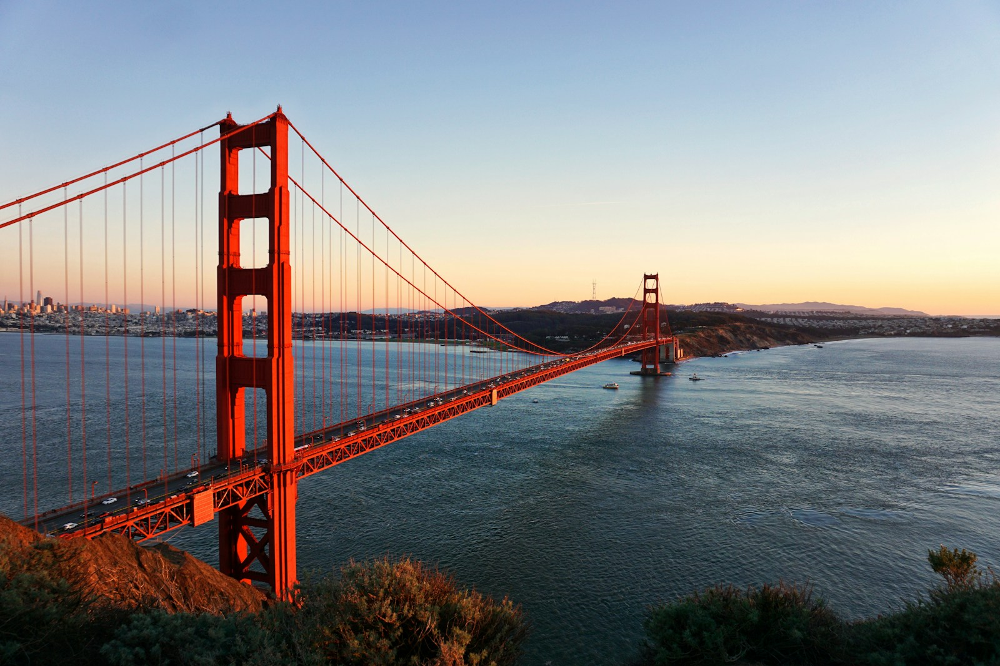
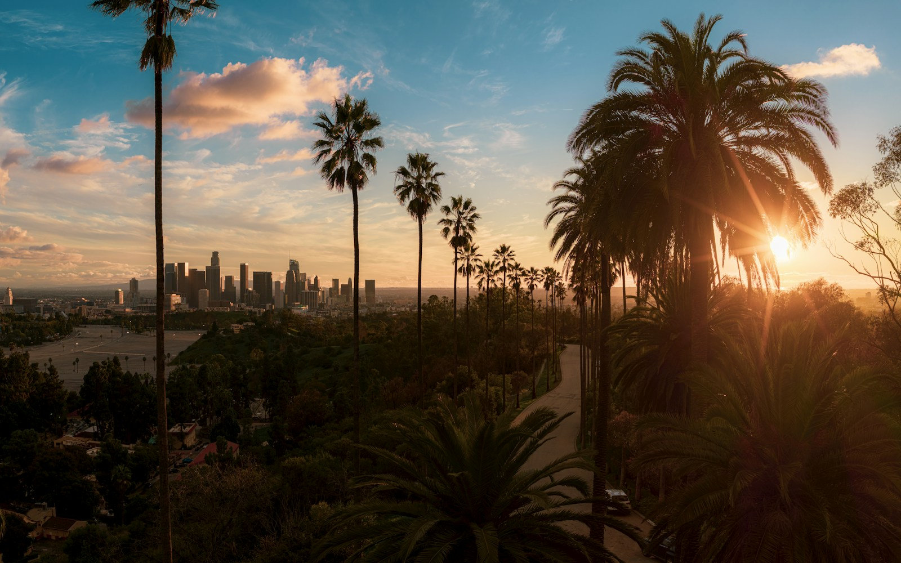
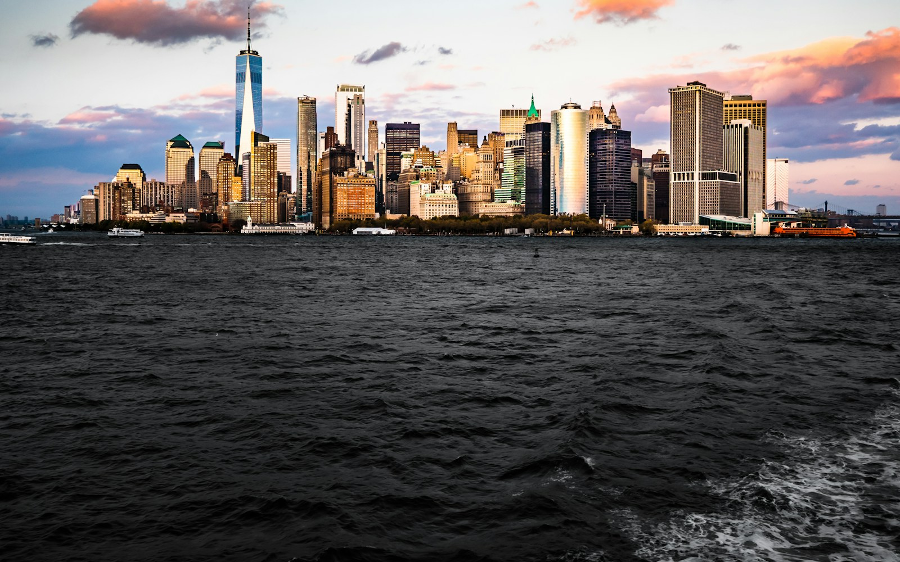

Statue of Liberty
Start with official island tickets. Choose New York departure; pedestal or crown only if available. Standard island access is a good fallback.
Official ticket guidanceSan Francisco mornings. Pacific sunsets.
And a New York state of mind.

CHAPTER 01↗September 9–12 · 3 nights + onward travelSan Francisco
CHAPTER 02↗September 13–15 · 2 nightsLos Angeles
CHAPTER 03↗September 15–23 · 8 nightsNew York CityGo big on the moments. Leave room for the trip.
Three nights in San Francisco, a Santa Cruz day and overnight coach, two nights in LA, then eight in New York. The September 12 connections are provisional; Vegas stays outside the main route.
Open a day for the plan, places and practical details.
Suggested local-time windows · Nothing is booked · September 23 assumed to be departure day
Three nights in SF, then Santa Cruz and a provisional overnight connection to LA.
Allow for immigration, luggage and your airport transfer, then check into the hotel. Stay in San Francisco for three nights; there is no need for a rental car until September 12.
Head to the Ferry Building and Embarcadero for bay views, coffee and something to eat. Keep the walk short and choose food around the actual arrival time.
Eat near the hotel and call it an early night. Tomorrow is the Golden Gate day, so nothing essential depends on arrival-day energy.
Head to the Golden Gate Bridge welcome area and walk part of the bridge if conditions are comfortable. Bring a layer: wind and fog can change the feel of the day. No need to cross the whole bridge.
Take transit or a rideshare to the Palace of Fine Arts, then find lunch and browse around Chestnut Street. Leave time for photos and a relaxed café stop.
Visit Alamo Square for the Painted Ladies view, then explore Hayes Valley for shops and dinner. These are separate neighborhoods; use transit between the waterfront and Alamo Square rather than walking every transfer.
Reserve the official Alcatraz island tour from Pier 33 if the history interests you. Allow most of the morning for the ferry and visit. If tickets are unavailable or it is not your thing, choose a bay cruise or a waterfront morning instead.
Make Pier 39 a short stop for the sea lions and bay atmosphere, then head to North Beach for a late lunch or coffee. Walk toward Chinatown if you have energy; food and neighborhood streets are the focus.
Work a cable-car ride into the afternoon; the California Street line is an option if you want to avoid building the day around a long turnaround queue. Finish with dinner and pack for tomorrow’s coast-and-bus travel day.
Pick up the rental early and head south. If return timing allows, use the coast via Half Moon Bay with one short stop. Allow roughly 2–3 hours of driving as a planning estimate, plus stops and traffic; check live road conditions.
Lunch, the beach and a visit to the Boardwalk if its September 12 hours fit. Keep the sightseeing window subordinate to the confirmed rental-return deadline. Do not assume a Santa Cruz rental branch accepts a late Saturday return.
After the car return or handoff is settled, reach the current Santa Cruz boarding stop and take the northbound Highway 17 Express toward San Jose Diridon. Use the new fall Saturday timetable effective September 10. Target at least 90–120 minutes between scheduled arrival and the intercity departure, with more buffer if the stops differ.
Book a direct overnight intercity service only after checking the exact date, pickup point, baggage allowance and LA arrival stop. A departure after midnight is September 13, even though you reach San Jose on September 12. The generic FlixBus page lists 12:35 a.m.; that is not verified availability for this trip.
Recover after the coach, catch Griffith at sunset and enjoy one full LA day.
The arrival time and stop depend on the unbooked coach. Arrange the transfer to your LA hotel and confirm luggage storage or paid early check-in; do not assume a room will be ready after an overnight bus.
If you feel up to it, see the Walk of Fame and TCL Chinese Theatre briefly. Otherwise take the afternoon to rest. Keep timed attractions off this arrival day.
Make Griffith Observatory the one headline experience if the bus arrives in time and you feel well rested. Go before sunset for the Hollywood Sign and city lights, then dinner near your hotel. Sunday fits the published opening pattern; check live access before leaving.
Start with Beverly Gardens Park, Rodeo Drive and a café breakfast. Keep this a relaxed, compact visit rather than a long shopping day.
Head west for lunch, the pier and time on the beach. Allow for LA traffic between neighborhoods. Santa Cruz was the classic boardwalk stop; here you get the unmistakable Santa Monica setting.
If you have energy, add a short beach-path ride or a Venice visit, checking bike-return hours. Otherwise stay in Santa Monica for sunset and dinner, then return to pack for the flight to NYC.
Eight nights for the icons, the neighborhoods and the little things in between.
Choose a morning nonstop if possible. Allow roughly 5–6 hours in the air from LA, and New York is 3 hours ahead, so much of the day disappears. Check whether you land at JFK, LaGuardia or Newark.
Allow for baggage and the airport transfer before committing to plans. Use the appropriate airport’s official transport guidance; the three airports have different routes.
If arrival allows, make a short visit to Times Square. Get the photos, take in the lights and have dinner. Save the full sightseeing day for tomorrow.
Start with coffee and browse the food stalls. Pick lunch when something looks good instead of building the day around a hard-to-get reservation.
Walk a manageable stretch of the High Line, then head toward Little Island. Stop for river views, take breaks and check park access before setting off.
Wander the smaller streets, see Washington Square Park and find dinner in the Village. Reserve ahead if there is a particular restaurant you really want.
Reserve a morning Statue City Cruises departure from New York, not New Jersey. Follow the ticket’s screening and arrival instructions. The selected ticket time relates to entry into screening, not a guaranteed ferry departure.
Allow about 4–5 hours overall, longer for deep museum visits. Choose pedestal or crown only if available and suitable; the standard island visit is still worthwhile. Ellis Island adds context to America’s immigration story.
If energy allows, walk past Wall Street and visit the outdoor 9/11 Memorial respectfully. The museum is a separate, longer visit. Skip an extra observation deck; Top of the Rock is already planned.
Have breakfast, then head toward the confirmed Downtown Manhattan heliport. Leave the morning flexible around the actual flight slot; avoid any distant timed attraction beforehand.
Aim for a HeliNY Downtown Manhattan departure, such as its 17–20 minute Ultimate Tour. Reach the heliport independently, allowing transit time plus the required check-in. Confirm the exact address on your reservation.
Keep the rest of the day nearby: a Seaport stroll, waterfront views and a relaxed dinner. The helicopter is the headline; no need to race straight to the opposite end of Manhattan.
Walk the Mall, Bethesda Terrace and Bow Bridge. Take a coffee break and leave time simply to sit. You do not need to cover the entire park.
Head south for Fifth Avenue, St. Patrick’s Cathedral and Rockefeller Center. This groups the sights naturally without repeated subway trips.
Reserve a time before sunset if the forecast is good. You get the Empire State Building in the skyline rather than standing inside it. Sunset slots can cost more and fill up.
Start on the Manhattan side and cross to Brooklyn. Go early for a calmer walk, keep the path clear for others and leave plenty of time for photos.
Find the Washington Street view, have lunch around DUMBO and wander the waterfront. Take photos from the sidewalk rather than standing in traffic.
Continue to Brooklyn Heights Promenade if your feet are happy. Stay for the light changing over Manhattan, then take the subway or a ferry with a confirmed return route.
Spend the morning at the Metropolitan Museum of Art. Choose two or three collections rather than trying to see everything. Monday fits its published weekly schedule; the museum is closed Wednesdays.
Take transit to Grand Central, then walk to Bryant Park and the New York Public Library’s main building. Check visitor access and tour times if you want to go inside.
Have dinner, then try a rooftop such as 230 Fifth for the Empire State Building backdrop if the weather is good. Check that evening’s opening and entry rules. A mocktail and the view are just as much the point as a cocktail.
Coffee, shopping, cast-iron streets and time to explore. This is intentionally a loose morning for whatever you still want to do.
Walk to Chinatown for lunch and pass through Little Italy if you are curious. Alternatively use the daytime for Central Park or Top of the Rock if they moved from September 19, a Brooklyn walk or a favorite place you want to revisit. Leave a generous buffer before Broadway.
Book a Tuesday performance through the show’s official ticket link. Choose a story or music you already like; a visual musical can be a fun first choice. Eat nearby and arrive according to the theater’s guidance.
Breakfast near the hotel and a short local walk. Keep luggage storage and checkout in mind. No major attraction or nonrefundable booking today.
Build the transfer around your actual departure airport and airline guidance. For an international flight, plan to reach the airport around 3 hours early, with travel time and a traffic buffer added on top.
Use any genuine spare time for a nearby café, a final shop or a familiar park. Return to collect luggage well before your planned airport transfer.
Check availability before fixing the order.
All links go to planning or booking pages; no reservations have been made.
Start with official island tickets. Choose New York departure; pedestal or crown only if available. Standard island access is a good fallback.
Official ticket guidanceThe trip’s helicopter ride. Confirm a Manhattan departure, total charges and weather policy. The ride must be on September 18 or 19. Plan for the 18th and keep the 19th flexible; availability is not yet confirmed.
NYC operatorConfirm the rental return first, then the new Saturday Highway 17 schedule and the overnight LA coach. After-midnight departure means a September 13 ticket.
Intercity route & bookingTop of the Rock is the one planned observation deck. Check the weather and ticket-change policy before choosing your time.
Official deck ticketsSF: Alcatraz official tickets · NYC: Broadway official shows · Rooftop: 230 Fifth
SF: walk, use transit and take occasional rideshares until September 12. Coast day: confirm the car return before buying onward transport. For the planned rental, at 23, confirm age rules, extra fees and accepted driving documents directly with the rental company.
LA: group stops geographically and budget for transfers. For NYC, use walking and the subway; tap the same card or device consistently. Current MTA fare guidance
San Francisco, Santa Cruz, San Jose and LA are on Pacific time. NYC is three hours ahead. All itinerary windows use the destination’s local time.
The September 12 car return and two-bus connection are the main schedule risks. An overnight coach may leave you tired; keep September 13 light. The NYC helicopter is planned for September 18, with September 19 as the only backup. September 22 can absorb displaced walking or observation-deck plans, but not the helicopter.
Allow roughly $550–950 per person for Alcatraz, the NYC helicopter, Broadway, the Liberty ferry, one deck and a museum. This is a planning allowance, not a live quote; premium seats, optional attractions and shopping can raise it.
Hotels, the rental car, one-way and young-driver fees, both bus legs, flights, food, local transport and shopping are separate. Compare final totals including taxes and facility charges.
Comfortable walking shoes, a refillable water bottle, sunglasses, sunscreen, a light layer and a power bank will earn their space. Bring a US plug adapter and check your charger’s voltage label.
Use mobile data for maps, save tickets offline and keep an extra copy of essential travel documents. Confirm any ID requirements on flight and activity bookings.
Recommendation: skip Vegas. The western leg now has three SF hotel nights, one provisional coach night and two LA hotel nights. A one-night Vegas option on September 14 costs the full LA beach-and-Beverly-Hills day and requires LA–LAS and LAS–NYC flights that fit. Choose that trade only if one Vegas evening matters more than a full LA day.
Planning information checked September 5, 2026. Operator pages can change. Dates, prices, opening hours, routes and availability must be reconfirmed at booking. Flight times and day lengths are estimates; hotel and airline choices are still open.
The official sources are linked beside the relevant day and booking item. Key references: National Park Service , HeliNY , The Met and Broadway League .
Photography: Los Angeles · Venti Views; San Francisco · Joonyeop Baek; New York · Sebastian Schuster. Photos via Unsplash, under the Unsplash License.